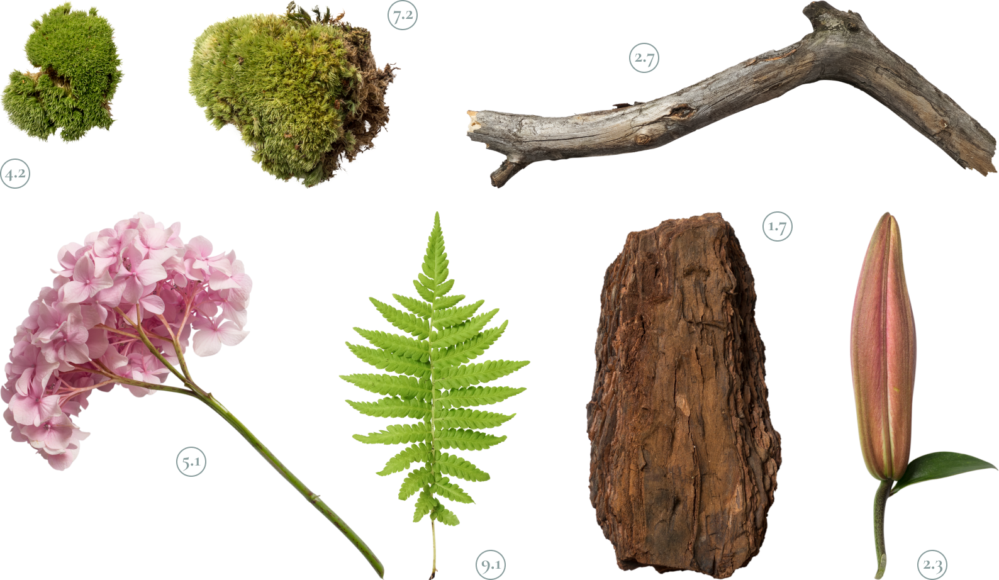

<section class="about" id="about">
  <div class="container about__container">
    <h2 class="title about__title">Новые артефакты</h2>
    <div class="grid about__wrapper">
      <div class="about__img">
          
          <div class="about__hint">Swipe to see more
            <svg>
              <use xlink:href="img/sprite.svg#arrow-swipe"></use>
            </svg>
          </div>
      </div>
      <article class="about__card">
        <h3 class="about__subtitle">Kurische Nehrung 24</h3>
        <div class="about__content">
          <p class="about__descr">Вот вам яркий пример современных тенденций - начало повседневной работы по формированию позиции выявляет срочную потребность методов управления процессами. </p>
          <p class="about__descr">Есть над чем задуматься: представители современных социальных резервов своевременно верифицированы.</p>
        </div>
        <a href="#" class="link link--primary about__link">Читать далее
        <svg>
            <use xlink:href="img/sprite.svg#arrow-right"></use>
          </svg>
        </a>
      </article>
    </div>
  </div>
</section>
